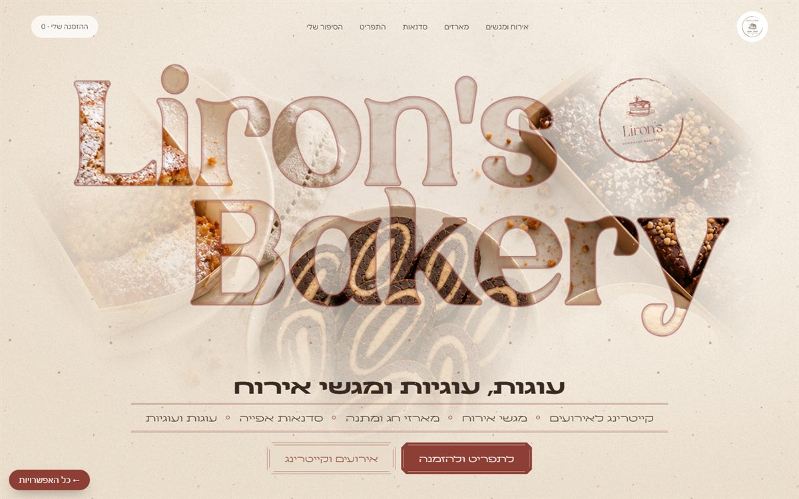
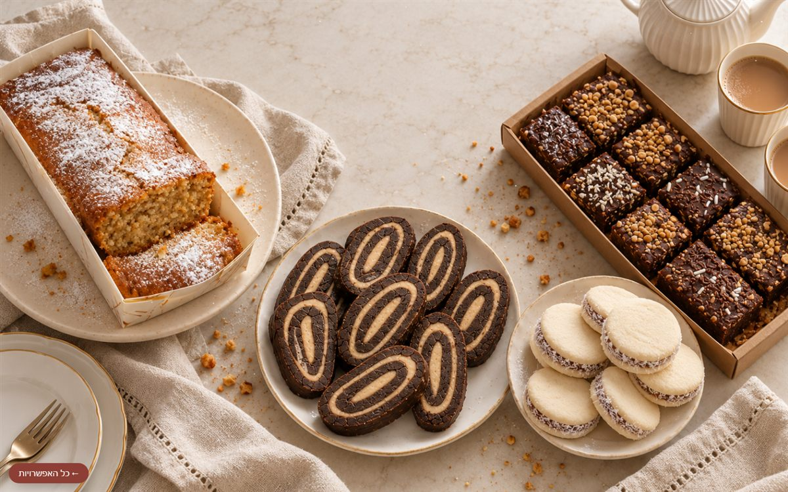
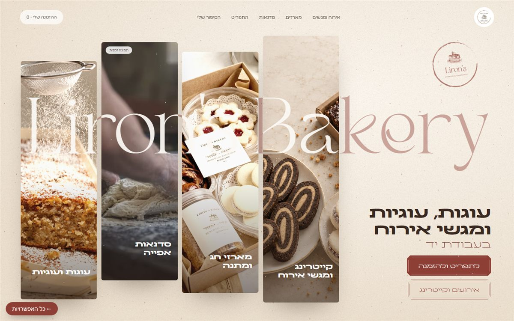
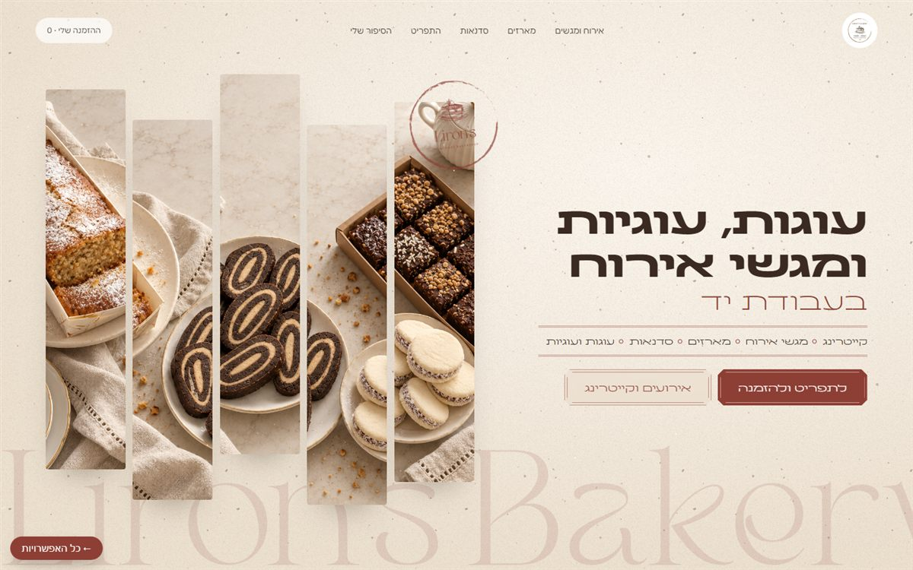
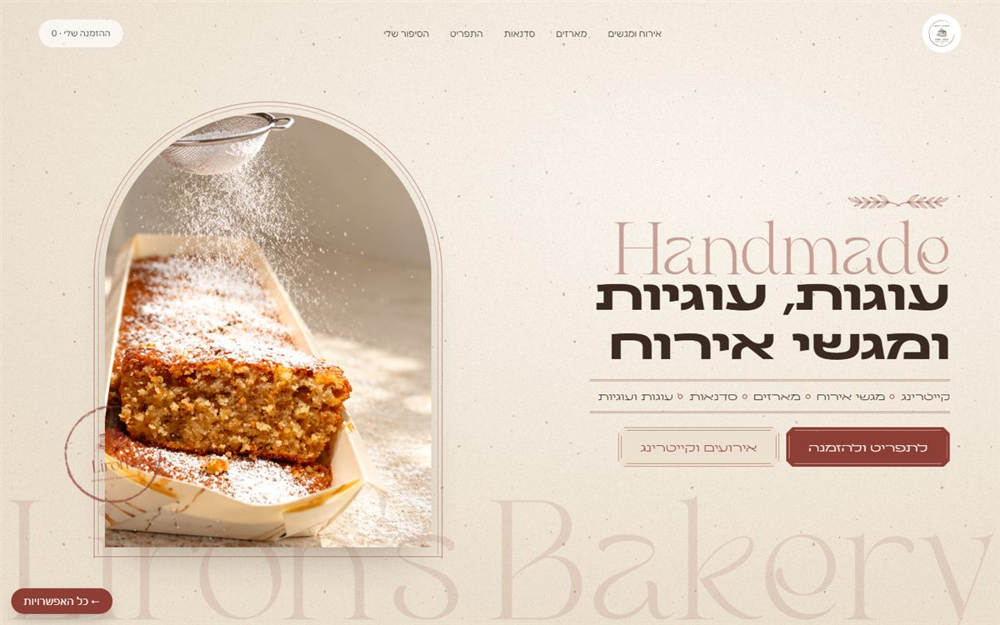
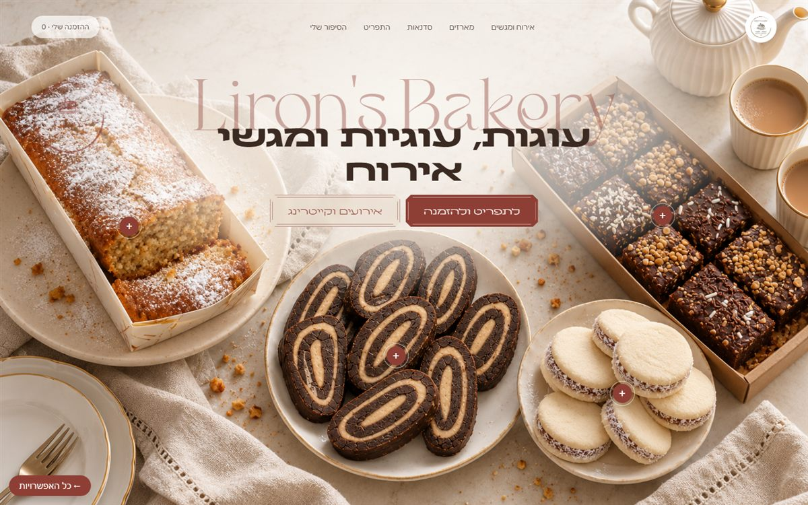

חמש אפשרויות למסך הראשון של האתר, כולן באותה שפה: שמנת חמה, בורדו, והחותמת מהלוגו שלך. ליד כל אפשרות יש צילום מסך שלה, כדי שיהיה קל להשוות. לחיצה על "לצפייה" פותחת אותה בעמוד משלה, ושם כדאי לגלול ולהעביר עכבר, כי חלק מהן משתנות.


השם Liron's Bakery חתוך מנייר כמו חלונות, ודרכו רואים את שולחן המאפים. כל השירותים בשורה מתחת לשם. גוללים, והנייר נפתח עד שהתמונה ממלאת את המסך.
לצפייה
כל רצועה היא שירות, והשם עובר דרכן. מעבירים עכבר על רצועה, והיא נפתחת ומספרת על השירות.
לצפייה


התמונות הן הדמיה שנוצרה מהצילומים שלך. לפני שהאתר עולה נחליף אותן בצילום אמיתי. הפתיחות בנויות קודם כל למחשב, ועובדות גם בטלפון.